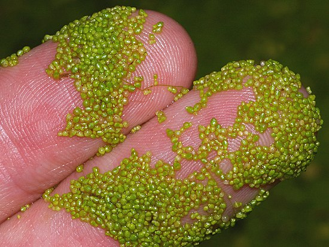

Вольфия (лат. Wolffia) — род водных однодольных растений из подсемейства рясковых (Lemnoideae) семейства Ароидные (Araceae). Около 10 видов[4]. Включает самые маленькие цветковые растения на Земле[5], например, вольфию шаровидную.
Представляют собой плавающие на поверхности воды зелёные или жёлто-зелёные эллиптические пластинки размером около 1 миллиметра (длиной 0,4-1,6 мм и шириной 0,2-1,0 мм; корней нет)[6][7], например: 0,3-0,8 мм (Wolffia globosa[6]), 0,5-0,8 мм (Wolffia angusta), 0,7-1,5 мм (Wolffia borealis[8]), 0,5-1,6 мм (Wolffia brasiliensis[8]). Вес отдельного растения Wolffia globosa (длиной 0,6 мм и шириной 0,3 мм) составляет всего 150 микрограмм[9].
Хромосомный набор (диплоидный) 2n = 20, 22, 30, 40, 42, 44, 46, 50, 60, 62, 80[8].
Вольфии содержат столько же белков, сколько и соевые бобы, что позволяет их использовать не только в аквариумистике (на корм рыбам и в качестве естественного затенения аквариума при выращивании тенелюбивых растений)[10], но и в пищу для человека (даже выпекать на их основе сдобу)[11]. В сухой массе вольфий около 44 % углеводов, 20 % белков, 5 % жиров, витамины A, B2, B6, C и PP[12].
Название Wolffia дано в честь немецкого ботаника и энтомолога Йохана Ф. Вольфа (нем. Johann Friedrich Wolff, 1778—1806).